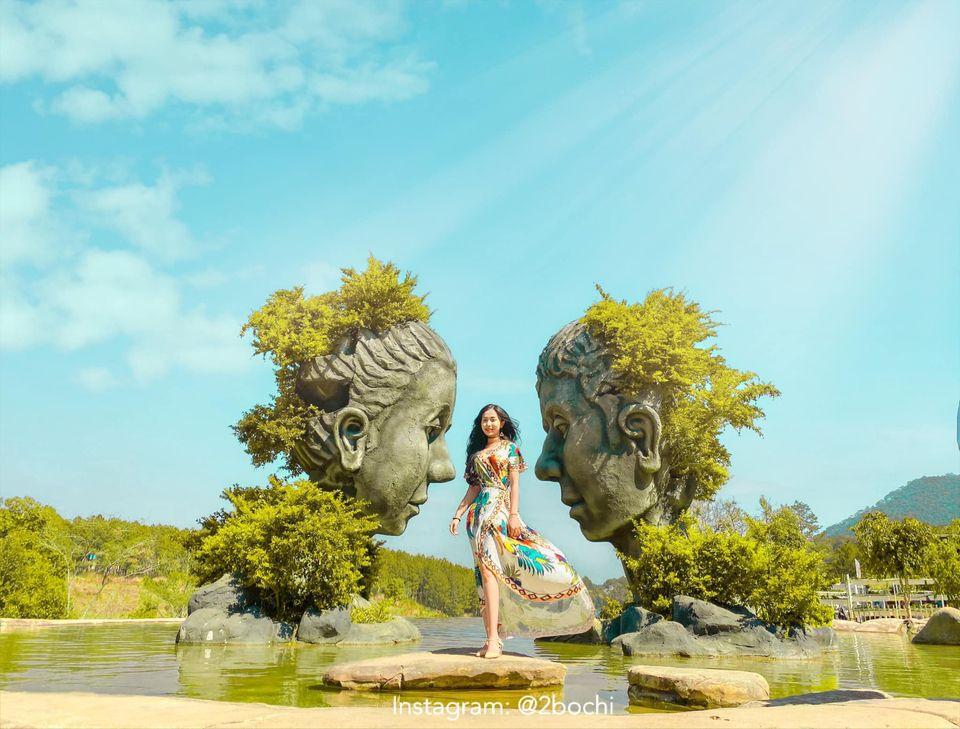
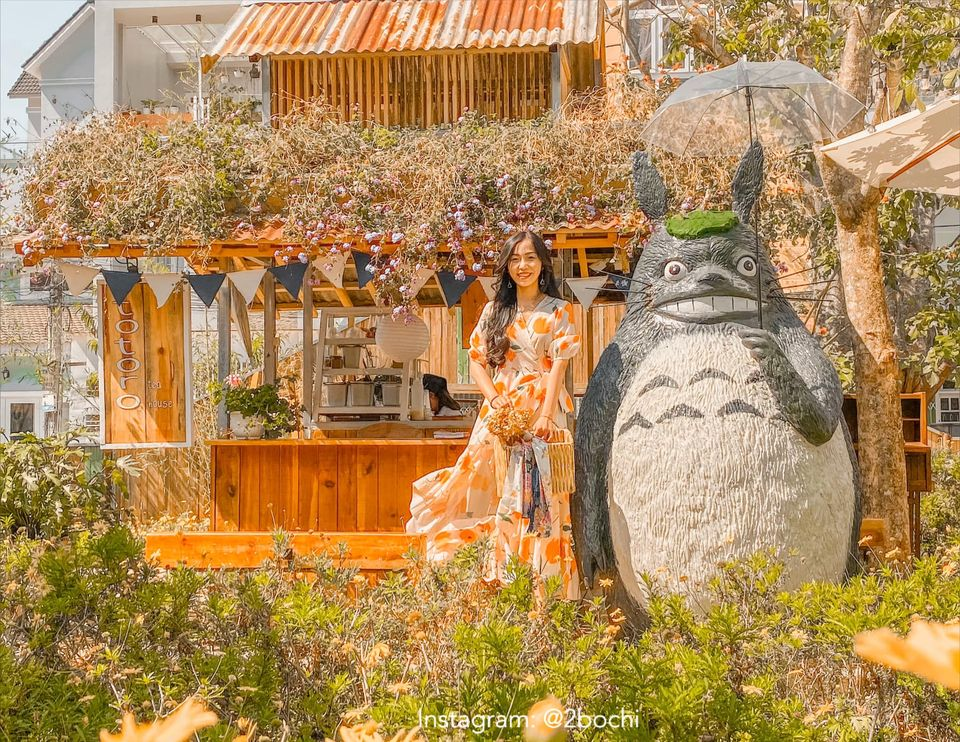
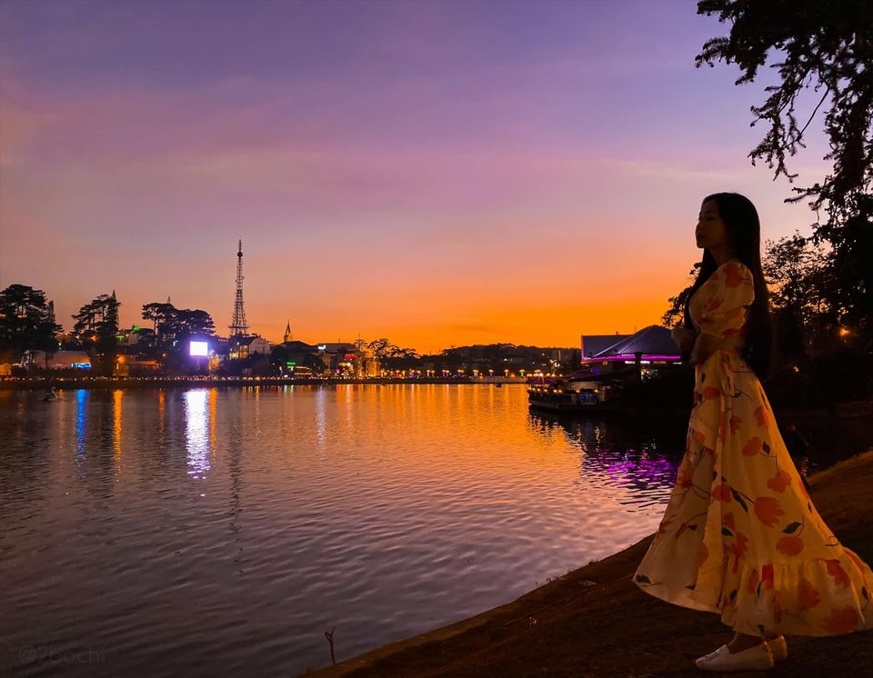

Review du lịch Đà Lạt 4 ngày 3 đêm chơi đâu? ăn gì ? cực chi tiết
Đà Lạt – nơi dành cho những cô gái yêu sự bình yên và mộng mơ nên thơ (như mình). Mình vừa có chuyến du lịch Đà Lạt 4 ngày 3 đêm khá là tuyệt nên chia sẻ với mọi người nhé  Thời gian: 4 ngày 3 đêm.Tổng thiệt hại: 2.025k/người
27 toạ độ check in: * Cafe An Miên – Cacao Ơi – K Station – Bittersweet – Doha Quảng Trường Lâm Viên – Hồ Xuân Hương
* Windmills Cối xay gió – Đường Hầm Đất Sét – Lavender Farm Cafe – Dalat Wonder – Dalaland – Hồ Trên Mây – Bohem Cafe – Dreamer Home & Coffee
* Hillside Hideaway – Still Cafe – Alaska Coffee & Tea – Cầu Đất Cafe – Đồi chè Cầu Đất – Cây thông mập – Tiệm Cafe Túi Mơ To
* Him Cafe – Boho Corner – Greenland II – Xưởng Kem Hoa – Triệu Đoá Hồng – Vườn Yên – Đồi thông Suối Vàng
Vì mình đi Đà Lạt gần hết Đà Lạt rồi nên hành trình lần này hơi ngẫu hứng, và chủ yếu là lăn qua các quán cafe đẹp ở Đà Lạt thoai nhé.

Lịch trình chi tiết của mình như sau nha:
Phương tiện di chuyển đến Đà Lạt? Mình đi về bằng xe Thành Bưởi, giá vé giường nằm là 210k/chiều. Đến Đà Lạt rồi đi xe trung chuyển miễn phí về khách sạn.
Ở đâu khi du lịch Đà Lạt nè?
Mình chọn Tường Vy Hotel vì lần này chỉ đến Đà Lạt để trải nghiệm nhẹ nhàng, không dự định rong ruổi nhiều điểm nên mình chọn ngay trung tâm, dễ dàng đi bộ ra Hồ Xuân Hương, Chợ Đà Lạt và các điểm ăn uống.
Thông tin khách sạn: Khách sạn: Tường Vy
Địa chỉ: 56 Nguyễn Văn Trỗi
Giá: 200k/đêm
Khoảng cách:Cách chợ 650m
Phương tiện di chuyển ở Đà Lạt
Mình thuê xe của khách sạn luôn để tiện di chuyển với giá 100k/ngày. Xe ở đây cô chú chủ cho thuê còn rất mới, mà xe xịn nữa nên trèo đèo lội suối rất êm ái.
P/s: Ngày đầu mình lên, đa phần thả bộ đi dạo tận hưởng không khí Đà Lạt nên không thuê xe nhen.
LỊCH TRÌNH CHI TIẾT:
Vì đến Đà Lạt từ sớm nên mình gửi hành lý ở chỗ lễ tân khách sạn rồi thả bộ đi ăn uống, cafe và dạo mát, tận hưởng không khí Đà Lạt.
Hồ Xuân Hương: Check in free
 Windmills Cối xay gió
Cửa hàng này kết hợp với tiệm bánh Cối xay gió nên vừa có không gian café, bánh và các món ăn vặt tuổi thơ nữa. Ngay chợ luôn nên đi bộ ra là tới, nằm trong danh sách quán ruột, giá rẻ mà ngon của mình khi đến Đà Lạt.
* Địa chỉ: 7a Ba Tháng Hai
* Thời gian mở cửa: 8h00 – 22h00
* Giá: Từ 20k